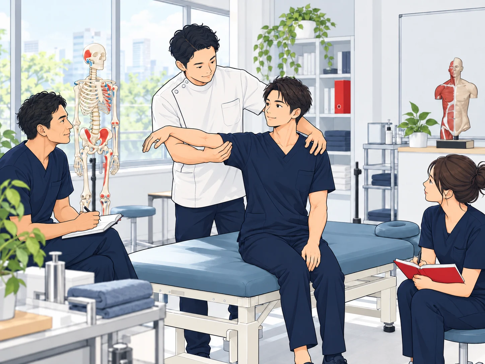
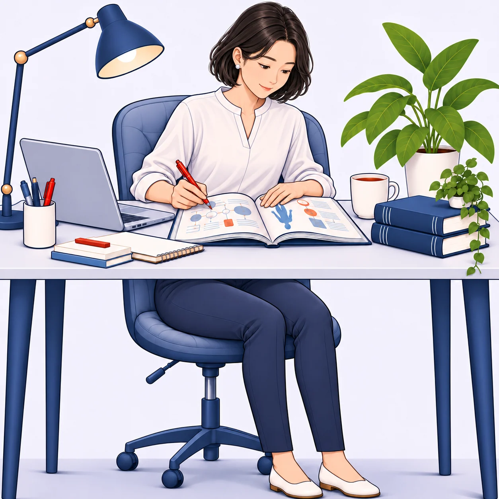
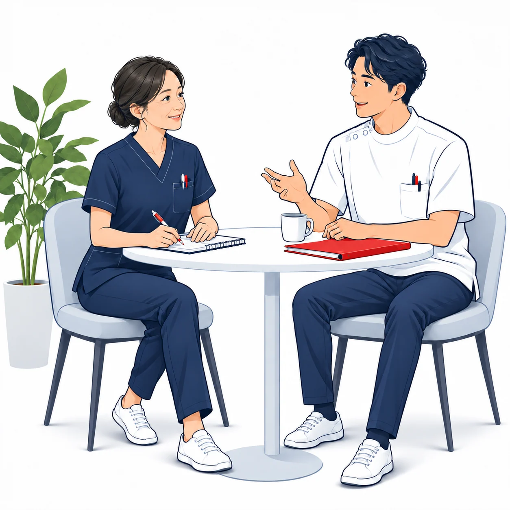
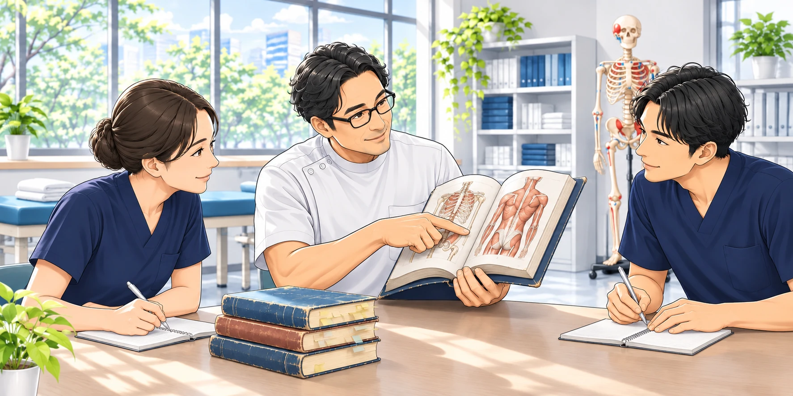
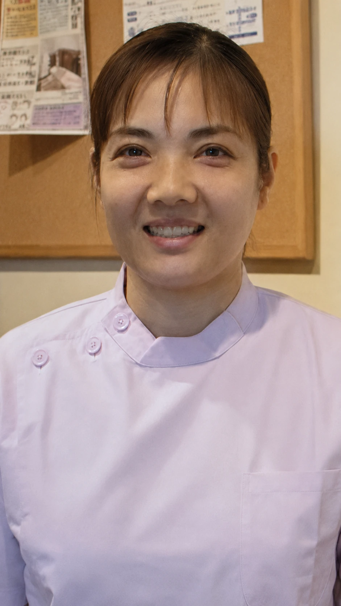
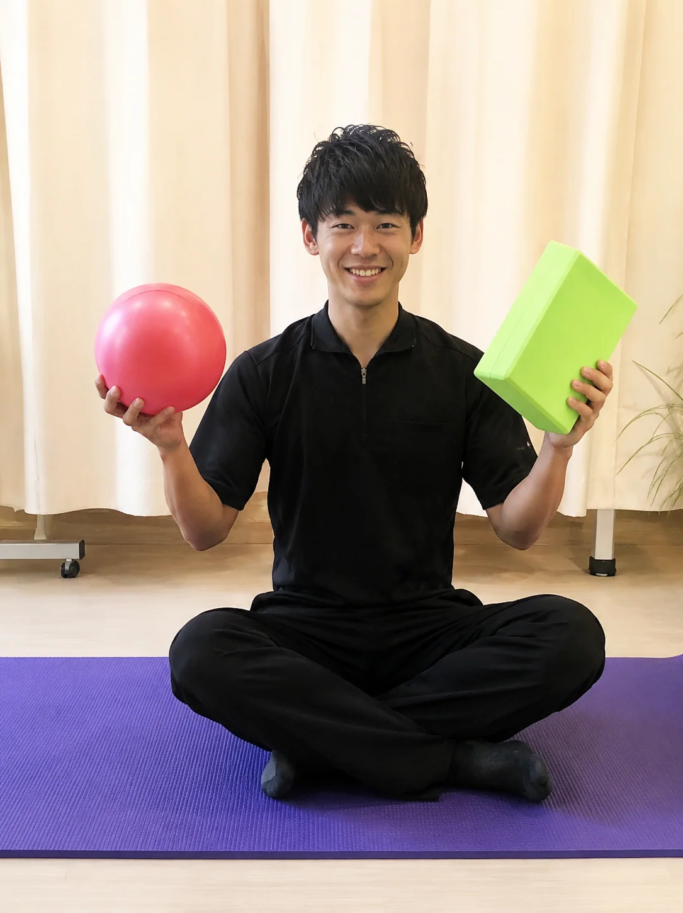

縄田 菊恵先生
整体院OASIS筑紫野院
整体師



学院の実績
積み重ねてきた実績を、あなたの新しい一歩へ。

学ぶことも、その先の働き方も。
気になるところから、ご覧ください。
卒業生の声
整体院OASIS筑紫野院
整体師

MIRYO整体院
美容整体師／公認カイロプラクター／院長
日本整体師育成専門学院で、身体の仕組みと施術の基礎を学び、技術だけでなく一人ひとりに寄り添う姿勢を身につけました。現在はMIRYO整体院で、美容整体師・公認カイロプラクターとして、健康と美しさを支える施術に取り組んでいます。学びを現場で活かしながら、信頼される整体師を目指しています。

整体院OASIS イオンモール新利府
整体師
日本整体師育成専門学院では、基礎から現場で役立つ技術まで、一つひとつ丁寧に学ぶことができました。先生方との距離も近く、分からないことをすぐに相談できる環境です。人に喜ばれる仕事を目指す方に、安心して学べる学院だと思います。

すまいる整体院
院長
26歳で日本整体師育成専門学院に入学し、施術技術だけでなく、患者様との向き合い方や仕事への姿勢まで学びました。実践を重ねながら成長できる環境があり、未経験でも目標に向かって進めます。施術者を目指す方に、安心しておすすめできる学院です。

Replus整体院
整体師
入学前は、整体を学んでみたいという気持ちで、比較的ふらっと一歩を踏み出しました。ですが実際に学び始めると、身体の仕組みや施術の考え方、現場で必要な技術まで、想像以上に深く学べる環境でした。実技も繰り返し学べるため、知識だけでなく技術がしっかり身についていく実感がありました。現在はその学びを日々の施術に活かしています。

整体院OASIS直方院
整体師
日本整体師育成専門学院で、身体の仕組みと施術の基礎を学び、状態に合わせて丁寧に向き合う大切さを身につけました。現在は整体院OASIS直方院で整体師として、目の前の方に寄り添う施術を心がけています。学んだ技術を日々の現場で磨きながら、笑顔と健康を支えられる整体師を目指しています。
学院案内
新しい一歩を、ここから。
学び方も、仕事のことも、これからの自分のことも。
まずは気軽に、あなたの目指す未来を聞かせてください。
未経験の不安が、現場に立つ自信へ変わりました。
入学前は、知識も経験もない自分が授業についていけるのか、本当に整体師になれるのか不安でした。しかし、基礎から丁寧に学び、先生方に一つひとつ教えていただく中で、できることが少しずつ増えていきました。実技を重ねるうちに不安も解消され、自信を持って施術に向き合えるようになりました。